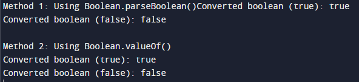

How to convert String to boolean
Code:-
public class StringToBooleanExample {
public static void main(String[] args) {
// Example: Convert String to boolean
String strTrue = "true";
String strFalse = "false";
// Method 1: Using Boolean.parseBoolean()
boolean boolValue1True = Boolean.parseBoolean(strTrue);
boolean boolValue1False = Boolean.parseBoolean(strFalse);
System.out.println("Method 1: Using Boolean.parseBoolean()");
System.out.println("Converted boolean (true): " + boolValue1True);
System.out.println("Converted boolean (false): " + boolValue1False);
// Method 2: Using Boolean.valueOf()
boolean boolValue2True = Boolean.valueOf(strTrue);
boolean boolValue2False = Boolean.valueOf(strFalse);
System.out.println("\nMethod 2: Using Boolean.valueOf()");
System.out.println("Converted boolean (true): " + boolValue2True);
System.out.println("Converted boolean (false): " + boolValue2False);
}
}
Output:-
